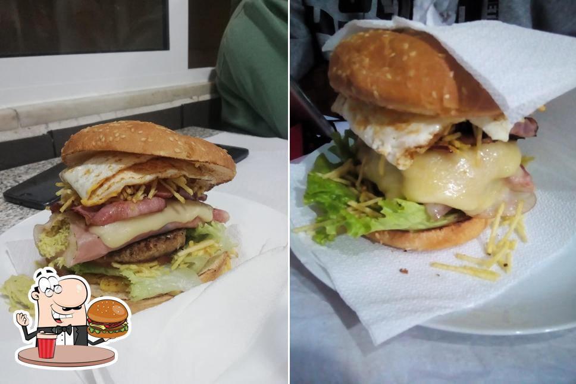

Prato do Dia
Pratos Brasileiros
Da feijoada ao frango grelhado, os sabores tradicionais do Brasil chegam ao seu prato com generosidade e frescura, a um preço justo.
Sabores autênticos do Brasil no coração de Parede
O Fénix Café traz os sabores genuínos do Brasil para Parede, Cascais. Da generosidade das porções ao calor do atendimento, cada detalhe foi pensado para fazer sentir em casa — seja a tomar um café de manhã ou a partilhar uma refeição à noite.
Com mais de 45 avaliações e fotos que falam por si, conquistámos a confiança da comunidade local e de quem visita a costa de Cascais. Venha descobrir porque as pessoas regressam.

Cozinha brasileira honesta — porções generosas, ingredientes frescos, receitas com alma. Aqui ficam alguns dos pratos que fazem os nossos clientes regressar.
Da feijoada ao frango grelhado, os sabores tradicionais do Brasil chegam ao seu prato com generosidade e frescura, a um preço justo.

Um burger artesanal feito com carne selecionada e os melhores ingredientes. Suculento, generoso e com um toque brasileiro inconfundível.
Café de qualidade, sumos naturais e petiscos para qualquer hora do dia. O ponto de encontro perfeito em Parede para uma pausa que vale a pena.
Avaliações reais de quem nos visitou no Google Reviews
★★★★★"Excelente, comida brasileira deliciosa com porções generosas a um preço justo."
— Duda, Google Reviews
★★★★"Funcionários profissionais e serviço espetacular, bom café, qualidade de comida muito elogiada."
— Paulo, Google Reviews
Rua Capitão Leitão, 13
2775-271 Parede, Cascais
Terça a Domingo
11h00 – 23h30
Encerrado à Segunda